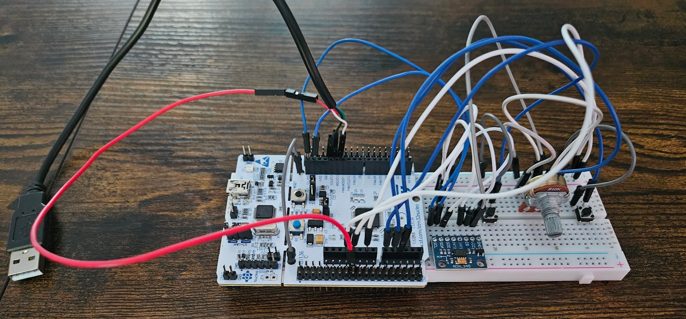
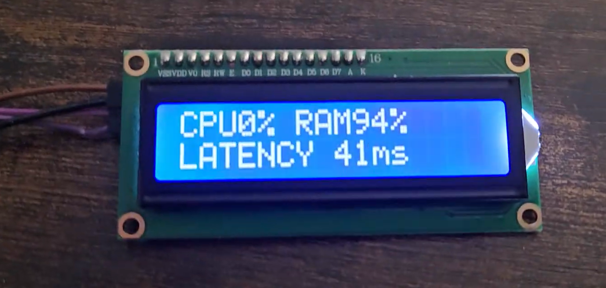
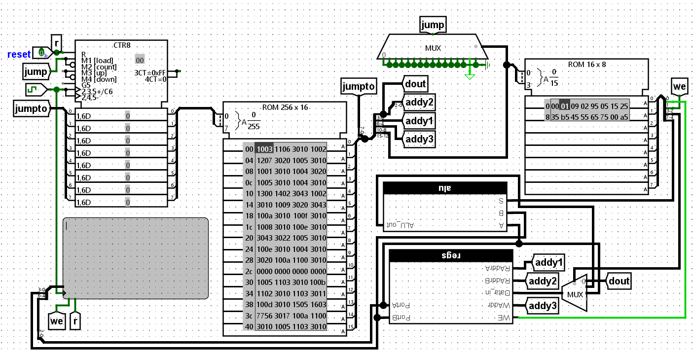
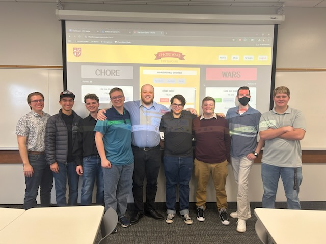
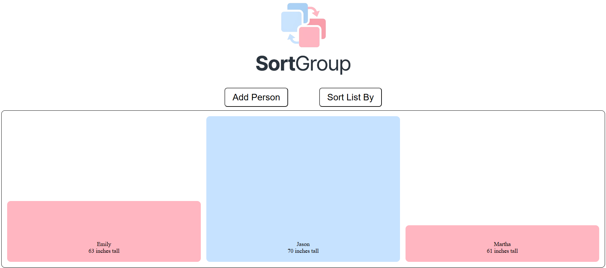

I am searching for internships! Anything computer related. I have:
2+ years experience building websites
3+ years experience in programming languages such as Python, C#, C, or C++
6+ months experience in computer hardware and circuitry
Please message me on LinkedIn or email me at jrwendt2004@gmail.com!
My Hardware
Faux Computer Mouse
My computer's touch pad broke. Rather than buying a computer mouse, I made one. Using STM32's IDE and MX tool I programmed the microcontroller to act as an actual computer mouse using the USB HID protocol. It runs an accelerometer for movement, a potentiometer for scroll, and two buttons for clicking.

Computer Metrics LCD Display
Using seven C# classes, I polled metrics from my windows computer and serially sent them to a STM32 microcontroller. Using code provided in a lab I had done, that was then sent to a character LCD screen.

4-bit Virtual CPU
As part of a final project, I had to make a working virtual 5-function CPU. After the semester, I added 7 more functions involving arithmetic and other binary operators. It is the functionality of a real 4-bit 1970s CPU.

The image includes the LogiSim virtual circuitry of a ABET-accredited level CPU.
View the project files here.
My websites
The Chore Wars (.com)
In order: Parker Dragovich, Caden Reeder, John Wendt, Cole Popejoy, Sean Heiner, Kendall Olson, Nicholas Olsen, Carson Alder, Nick Gray

Originally built by Kendall Olson, Sean Heiner, and Parker Dragovich in a hackathon. As a team project we transformed it into a functioning website with group pages and a login system, as well as touching up the UI and adding mobile useability.
For this project, I did some of the graphic design, and a majority of the CSS cleanup, reogranization, and commenting, for code readability and for minor bug fixes.
View the project site here.
List Sorting Web App

This was a personal project of mine, as I was learning to utilize JavaScript in my web development. I wanted to build a similar product to match a specific genre of YouTube video where different sortingm methods are visualized.
View the project site here